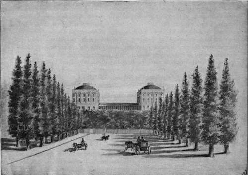

Burning Of The Capitol, 1814
Description
This section is from the book "The National Capitol. Its Architecture Art And History", by George C. Hazelton, Jr. Also available from Amazon: The National Capitol Its Architecture Art and History.
Burning Of The Capitol, 1814
Congress continued to occupy the two small wings until the ill-fated 24th day of August, 1814. Our second war with Great Britain was then at its height. Madison was President. A few days before, an English fleet, commanded by Admiral Cockburn and carrying troops under the command of General Ross, sailed up the Patuxent. The main debarkation took place at Benedict on the west bank of the river, whence the troops marched to Blad-ensburg, where an engagement ensued. An ignominious rout of the Americans followed, due, perhaps, as much to the policy of the generals as to the rawness of the troops.
By General Winder's orders, the Americans fell back on the Capitol and awaited the advancing enemy. "There," says Ingersoll in his History of the Second War, " General Armstrong suggested throwing them into the two wings of that stone, strong building. But General Winder with warmth rejected the proposal. . . . Colonel Monroe [afterwards President] coincided with General Winder's opinion. The Capitol, he feared, might prove a cul-de-sac, from which there would be no escape; the only safety was to rally on the heights beyond Georgetown. . . . Both at their first order to retreat toward the Capitol, and their last to retreat from it, and march beyond the city, insubordinate protests, oaths, tears, and bitter complaints broke forth. To preserve order in ranks so demoralized and degraded was impossible. Broken, scattered, licentious, and tumultuous, they wandered along the central, solitary avenue, which is the great entry of Washington; when arrived at Georgetown, were a mere mob, from which it was preposterous to suppose that an army could be organised to make a stand there".
This defeat of the Americans at Bladensburg, and the retreat, or rather flight, of the soldiers through the city, abandoning the government buildings to the mercy of the enemy, was the signal for a general panic. Every sort of vehicle was pressed into service to remove valuables from private homes and public offices. The President, after taking the field, found his counsel useless, and fled, as did Mrs. Madison, who stopped only to see to the removal from the White House of silver and other articles of value, including the picture of George Washington by Gilbert Stuart which, because of her womanly thoughtfulness, still adorns its walls. In this connection we quote her vivid letter to her sister, Mrs. Cutts, hastily written at the White House before the departure. If the officers and soldiers had been possessed of more of the 3 sense and heroism of this great woman, the city itself might have been saved.
Twelve O'Clock
Since sunrise I have been turning my spyglass in every direction, and watching with unwearied anxiety, hoping to discover the approach of my dear husband and friends; but alas, I can descry only groups of military wandering in all directions, as if there were a lack of arms or of spirit to fight for their own firesides".
THE CAPITOL, 1814.
Three O'Clock
Will you believe it, my sister, we have had a battle or skirmish near Bladensburg, and here I am still within sound of the cannon. Mr. Madison comes not. May God protect us ! Two messengers covered with dust come to bid me fly, but here I mean to wait for him. ... At this late hour a wagon has been procured and I have had it filled with plate and the most valuable portable articles belonging to the house. Whether it will reach its destination—the Bank of Maryland—or fall into the hands of British soldiery, events must determine. Our kind friend, Mr. Carroll, has come to hasten my departure, and is in a very bad humour with me because I insist in waiting, until the large picture of General Washington is secured, and it requires to be unscrued from the wall. This process was found too tedious for these perilous moments. I have ordered the frame to be broken and the canvas taken out. It is done ; and the precious portrait placed in the hands of two gentlemen of New York for safe-keeping.
14 And now, my dear sister, I must leave this house, or the retreating army will make me a prisoner in it by filling up the road I am directed to take".
The city was soon deserted, except by lawlessness and anarchy. " Many passed the night," writes Ingersoll, " in huts and cornfields around the town. The first considerable dwelling the enemy was to pass had been Mr. Gallatin's residence, the house of Mr. Sewall, some hundred yards east of the Capitol. From behind the side wall of that house, as is supposed, at all events from or near to it, a solitary musket, fired by some excited and perhaps intoxicated person, believed to be a well-known Irish barber, but never ascertained who was the perpetrator, no doubt aimed at General Ross, killed the bay mare he rode".
On reaching the Capitol, the enemy detailed a body of men to take possession of the building. Admiral Cockburn, incensed, no doubt, by the shot which killed Ross's horse, impudently ascended the rostrum in the House of Representatives, sprang into the Speaker's chair in his muddy boots, and, calling his battle-stained troops to order in mock parliament, shouted derisively : " Shall this harbor of Yankee Democracy be burned ? All for it will say, Aye ! " An unanimous cry in the affirmative arose from the soldiers, and the order was cheerfully given. By means of rockets, tar barrels found in the neighborhood, broken furniture, heaps of books from the Library, and pictures, including the full-length paintings* of Marie Antoinette and Ixmis XVI., which had been presented by that unfortunate monarch to Congress, the whole structure was soon in flames. This infamous act stamped Sir George Cockburn, admiral and baronet of England, a barbarian who justly merits the contempt of posterity. How strange that it fell to his lot, in the autumn of 1815, triumphantly to execute in the " Northumberland " the sentence of deportation to St. Helena, which had been passed upon Bonaparte.
Continue to: